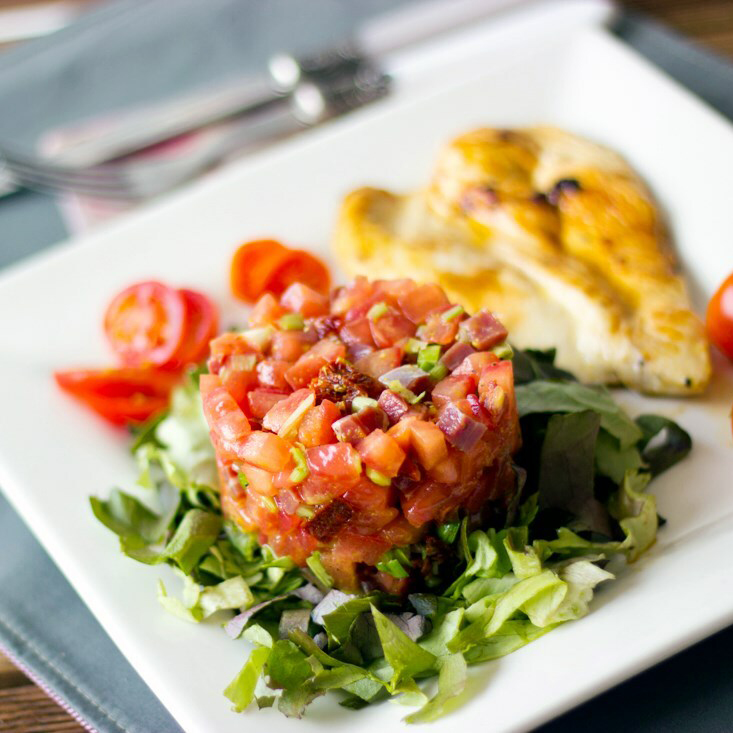

Tartar de tomate y jamón con pechuga de pollo a la plancha
 Con este tartar de tomate y jamón el éxito y la cara de sorpresa de los comensales está asegurada
Ingredientes:
- Tomate
- Jamón serrano
- Cebolla
- Tomates secos
- Sal y pimienta
- Puerro
- Mostaza